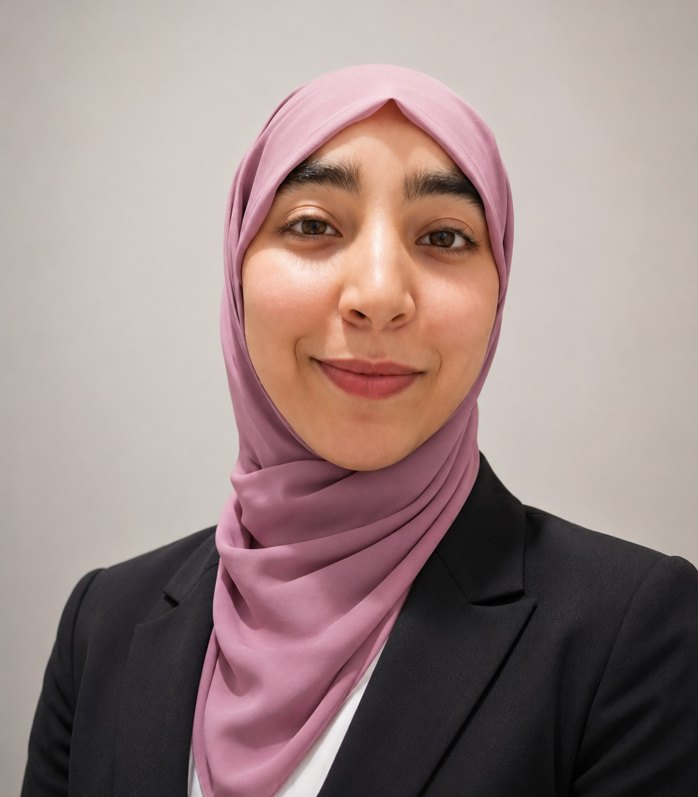

Je construis des détections, puis j'essaie de les contourner. I build detections, then I try to break them.
Élève ingénieure en dernière année, orientée SOC et detection engineering. J'ai déployé un SIEM Wazuh, écrit des règles validées par des attaques simulées et mené des tests d'intrusion sur 6 organisations. Final-year engineering student focused on SOC and detection engineering. I deployed a Wazuh SIEM, wrote rules validated by simulated attacks, and ran penetration tests on 6 organizations.

Objectif de carrièreCareer objective
Les missions du poste, et ce que j'ai déjà faitThe role's missions, and what I've already done
SIEM Wazuh déployé : centralisation et corrélation des logs réseau, Windows et Linux (YaneCode Digital).Deployed a Wazuh SIEM that centralizes and correlates network, Windows and Linux logs (YaneCode Digital).
Règles pour brute force, élévation de privilèges, scans réseau et exfiltration, chacune validée par une attaque simulée. Règles Suricata sur un lab C2. Détecteur ML de scans réseau : 99,78 % de rappel pour 0,06 % de faux positifs sur un scan inédit.Rules for brute force, privilege escalation, network scans and exfiltration, each validated by a simulated attack. Suricata rules on a C2 lab. ML network-scan detector: 99.78% recall at 0.06% false positives on an unseen scan.
Tests d'intrusion externes en boîte noire sur 6 domaines (IFGICT) : CMS obsolètes, FTP mal configuré, erreurs SPF/DNS. Constats par criticité et plan de remédiation.External black-box penetration tests on 6 domains (IFGICT): outdated CMS, misconfigured FTP, SPF/DNS errors. Findings by severity and a remediation plan.
Rapports en français et en anglais : synthèse exécutive, constats classés, feuille de route, pour publics techniques et décisionnaires.Reports in French and English: executive summary, rated findings, roadmap, for technical and management readers.
Comparaison NIST CSF 2.0 / ISO 27001:2022 avec matrice de correspondance des contrôles.NIST CSF 2.0 vs ISO/IEC 27001:2022 comparison with a control mapping matrix.
Deux stages à distance, été 2026Two remote internships, summer 2026
YaneCode Digital
- Déploiement d'un SIEM Wazuh : collecte et corrélation des logs réseau, Windows et Linux.Wazuh SIEM deployment: collection and correlation of network, Windows and Linux logs.
- Règles de détection (brute force, élévation de privilèges, scan réseau, exfiltration), chacune testée par une attaque simulée.Detection rules (brute force, privilege escalation, network scan, exfiltration), each tested with a simulated attack.
- Détecteur ML de scans réseau (Random Forest) : 99,78 % de rappel pour 0,06 % de faux positifs sur un scan inédit, exposé via une interface Streamlit.ML network-scan detector (Random Forest): 99.78% recall at 0.06% false positives on an unseen scan, exposed through a Streamlit interface.
IFGICT
- Tests d'intrusion externes en boîte noire et OSINT sur 6 domaines (Nmap, Whois, Dig, curl, journaux de transparence des certificats).External black-box penetration tests and OSINT on 6 domains (Nmap, Whois, Dig, curl, certificate transparency logs).
- Constats : CMS obsolètes, FTP mal configuré, erreurs SPF/DNS, logiciels en fin de vie.Findings: outdated CMS, misconfigured FTP, SPF/DNS errors, end-of-life software.
- Rapports FR/EN : synthèse exécutive, criticité, feuille de route de remédiation.FR/EN reports: executive summary, severity ratings, remediation roadmap.
- Analyse NIST CSF 2.0 / ISO 27001:2022 : matrice de correspondance et cadre cloud-native.NIST CSF 2.0 vs ISO 27001:2022 analysis: control mapping and a cloud-native framework.
Rapports de stageInternship reports
Implementation of a SIEM System with an AI/ML-Enhanced Detection Layer
- 4 règles Sigma/Wazuh (brute force RDP, élévation de privilèges, scan réseau, exfiltration), chacune confirmée par une attaque réelle sur le lab.4 Sigma/Wazuh rules (RDP brute force, privilege escalation, network scan, exfiltration), each confirmed by a real attack on the lab.
- Démarche ML documentée : deux échecs de généralisation diagnostiqués, puis des features temporelles par IP source (fenêtre de 10 s) qui résolvent le problème.Documented ML process: two generalisation failures diagnosed, then per-source-IP temporal features (10 s window) that fixed the problem.
- Random Forest final : 99,78 % de rappel pour 0,06 % de faux positifs sur un scan jamais vu.Final Random Forest: 99.78% recall at 0.06% false positives on a scan never seen before.
- Test indépendant sur 6 sessions et une 2e IP attaquante. Limite identifiée : 50,72 % de faux positifs sur un scan lent de 500 ports (bruit broadcast).Independent test on 6 sessions and a second attacker IP. Known limit: 50.72% false-positive rate on a slow 500-port scan (broadcast noise).
- Périmètre assumé : détection de scan réseau uniquement, prototype de labo, non intégré à Wazuh.Honest scope: network-scan detection only, lab prototype, not integrated into Wazuh.
Cyber Resilience by Design
Audits offensifs et cadre de gouvernance cloud-native aligné sur NIST CSF 2.0 et ISO/IEC 27001:2022.Offensive security audits and a cloud-native governance blueprint aligned with NIST CSF 2.0 and ISO/IEC 27001:2022.
- Mois 1 : 6 audits web complets (OWASP WSTG, PTES, NIST SP 800-115), avec plan de remédiation à 30/60/90 jours.Month 1: 6 complete web audits (OWASP WSTG, PTES, NIST SP 800-115), each with a 30/60/90-day remediation plan.
- Mois 2 : cadre de 14 contrôles en 3 couches, matrice de correspondance NIST × ISO et guide pour auditeurs et dirigeants.Month 2: a 14-control, 3-layer blueprint, a NIST × ISO mapping and a guide for auditors and executives.
Constat transversal : CSP absente sur 6 cibles sur 6, DNSSEC absent sur 5 sur 6.Cross-cutting finding: CSP missing on 6 of 6 targets, DNSSEC missing on 5 of 6.
ProjetsProjects
Lab C2 sous GNS3 et détection d'attaquesC2 lab on GNS3 and attack detection
Un laboratoire Command & Control simule deux attaques puis les détecte en temps réel. Même cycle qu'un analyste SOC : attaquer, observer, détecter.A Command & Control lab simulates two attacks, then detects both in real time. The same cycle as a SOC analyst: attack, observe, detect.
Kali Linux lance un backdoor Meterpreter et un reverse shell TCP.Kali Linux launches a Meterpreter backdoor and a TCP reverse shell.
Machines Windows 7 et Ubuntu dans le réseau GNS3.Windows 7 and Ubuntu machines inside the GNS3 network.
Trafic capturé et analysé avec Wireshark.Traffic captured and analyzed with Wireshark.
Règles Suricata personnalisées : les deux attaques sont signalées en temps réel.Custom Suricata rules flag both attacks in real time.
Laboratoire de sécurité des systèmesOperating system security lab
Environnement type entreprise (Ubuntu, Windows Server, Kali) : brute force SSH, analyse des logs, identification des vulnérabilités, durcissement.Enterprise-style environment (Ubuntu, Windows Server, Kali): SSH brute force, log analysis, vulnerability identification, hardening.
Test d'intrusion d'application webWeb application penetration test
Tests des mécanismes d'authentification et plan de remédiation.Authentication testing and a remediation plan.
Correction d'examens par IAAI-based exam grading
Application web full-stack (PHP, Python) avec un LLM et une architecture RAG pour corriger des réponses ouvertes.Full-stack web app (PHP, Python) using an LLM and a RAG pipeline to grade open-ended answers.
CompétencesSkills
SOC & SIEM
Wazuh, Sigma, detection engineering, Filebeat, Winlogbeat
IDS/IPS et réseauxIDS/IPS and networking
Suricata, Zeek, Wireshark, TCP/IP, VLANs, pare-feuxfirewalls, GNS3
Vulnérabilités et testsVulnerabilities and testing
Tests d'intrusionPenetration testing, OSINT, Nmap, Burp Suite, Hydra, Metasploit
GouvernanceGovernance
NIST CSF 2.0, ISO/IEC 27001:2022, mapping de contrôles, rapports et feuilles de routecontrol mapping, reports and roadmaps
IA pour la sécuritéAI for security
Scikit-learn, XGBoost, Isolation Forest, Random Forest, Streamlit
Systèmes et langagesSystems and languages
Kali Linux, RHEL, Ubuntu Server, Windows Server, Python, Java, C, PHP, JavaScript, Git
Formation et certificationsEducation and certifications
Cycle ingénieur en cybersécurité, dernière annéeCybersecurity engineering degree, final year
Licence en Mathématiques et Informatique (SMI)Bachelor's in Mathematics & Computer Science (SMI)
Baccalauréat, Sciences Mathématiques ABaccalaureate, Mathematical Sciences A
Certifications
- AWS Academy Graduate, Cloud Foundations (oct.Oct 2026)
- Red Hat System Administration I (RH124) etand II (RH134)
- Cybersecurity Foundation, Palo Alto Networks
- Ethical Hacker, Cisco Networking Academy
- Pre-Security Path, TryHackMe
LanguesLanguages
Arabe : langue maternelle · Français : courant (C1) · Anglais : professionnel (B2/C1)Arabic: native · French: fluent (C1) · English: professional (B2/C1)
Parlons de votre équipe SOCLet's talk about your SOC team
Disponible dès janvier 2027 pour un stage de fin d'études de 6 mois, au Maroc et dans d'autres pays.Available from January 2027 for a 6-month final-year internship, in Morocco and other countries.